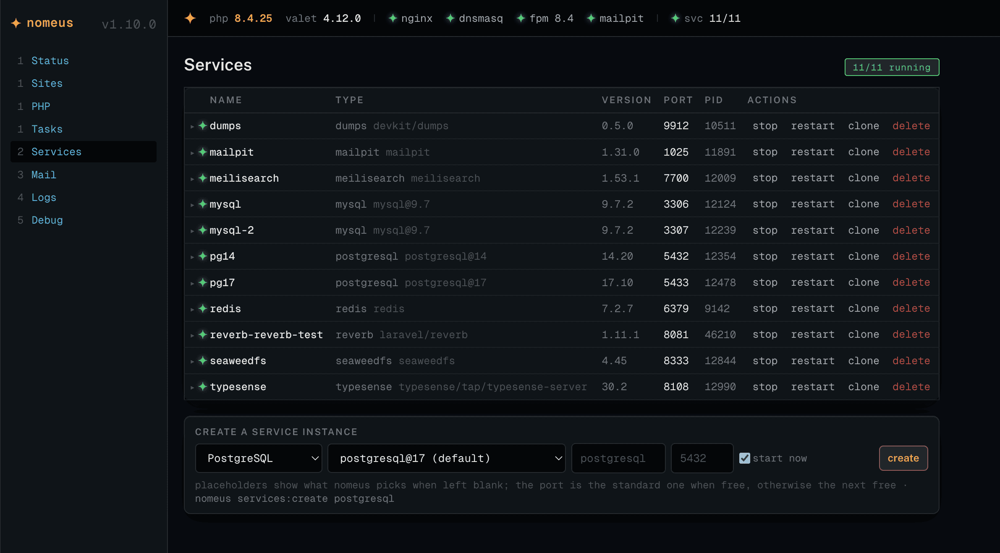

Nomeus is a free, self-hosted local environment for macOS: multi-instance services, per-app mail, a dump server, log tailing and Xdebug — one Laravel app that is both a CLI and a dashboard at nomeus.test. MIT.
$ curl -fsSL https://nomeus.dev/install | bash

Valet serves the sites. Homebrew provides the binaries. Nomeus is the shepherd that keeps them accounted for.
A nomeus.yml declares link, tls, php, node, services, databases, mail, .env and scripts. nomeus init is idempotent — re-running changes nothing.
# nomeus.yml
domain: shopvault
php: "8.4"
secure: true
services:
- { type: postgresql, instance: pg17, database: shopvault }
- { type: redis }
mail: true
post-init: [php artisan migrate --force]
$ nomeus init ✓ link shopvault.test · secure · isolate php 8.4 ✓ db:pg17 createdb shopvault · redis: already running ✓ mail: tagged shopvault · client package ✓ .env: set 9, added 4 · migrate $ nomeus init # again: every step "skip"
Services are native Homebrew binaries under nomeus-owned launchd agents, data under ~/.nomeus/services/. Existing brew services come along; ports are kept.
$ nomeus services:doctor WARN postgresql@17 runs under brew services — nomeus services:adopt postgresql@17 $ nomeus services:adopt postgresql@17 --name=pg17 ✓ brew services stop · data copied · role postgres · port 5432 kept ✓ pg17 running under dev.nomeus.svc.pg17 a second postgres on 5433? nomeus services:clone pg17 pg17-test
An auto_prepend_file speaks VarDumper's server protocol, so dumps arrive from any site with nothing installed in it. The optional client package adds queries, jobs, views, requests and logs per request.
Sixty-odd checks across Valet, PHP, launchd, ports, ini files and retention. Every warning names the command that clears it; the dashboard offers the same fix as a button.
$ nomeus doctor 59 ok · 2 warn · 0 fail WARN xdebug php 8.4 mode on but nothing listens on 9003 fix: nomeus xdebug:mode trigger --php=8.4 WARN redis ext shop .env uses redis, php 8.4 lacks the extension fix: nomeus php:ext redis --php=8.4
Nothing. MIT-licensed, self-hosted, no account, no telemetry. Herd Pro is $99/year per seat; Nomeus is the same jobs on software you already trust — Valet, Homebrew, launchd — arranged so you can read every line that touches your machine.
Prerequisites: Xcode Command Line Tools (for git) and Homebrew. The script refuses to run without them.
$ curl -fsSL https://nomeus.dev/install | bash -s -- --trust
What it does: clones github.com/owldesign/nomeus to ~/.nomeus/app and runs install/install.sh: Homebrew bundle, Valet, dependencies, the dashboard build, nomeus.test, the php ini — ending with nomeus doctor. Re-running is a no-op. --trust runs valet trust so the dashboard can act without password prompts; leave it off to be asked.
/install on this domain serves the raw install/bootstrap.sh from the repo — read it before you pipe it.